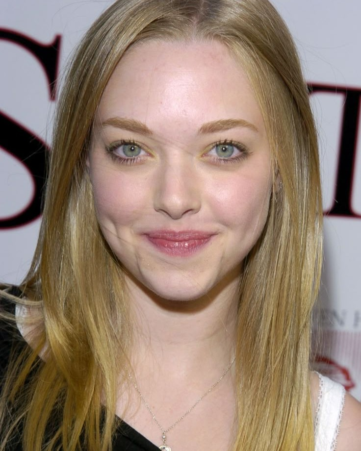
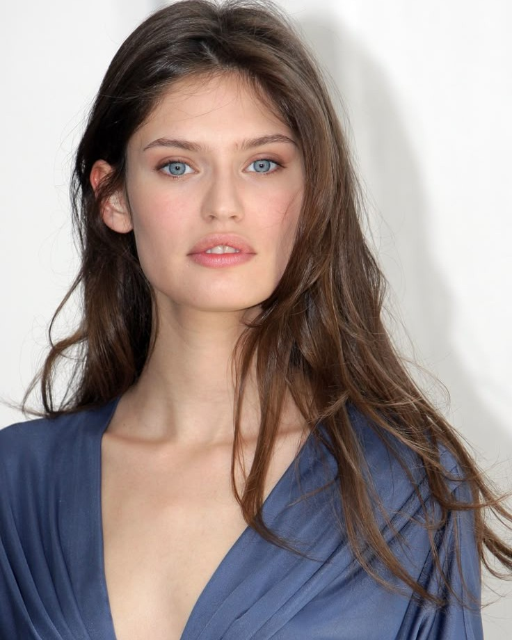
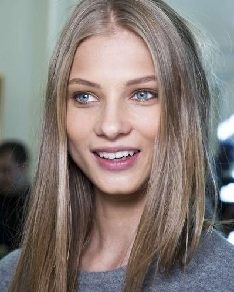
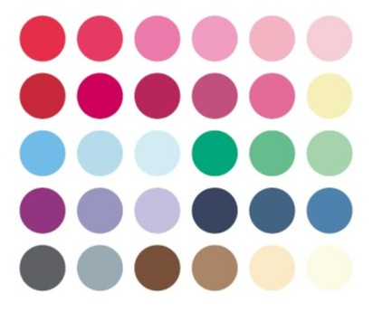
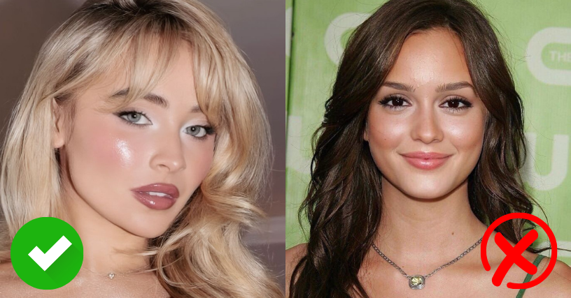
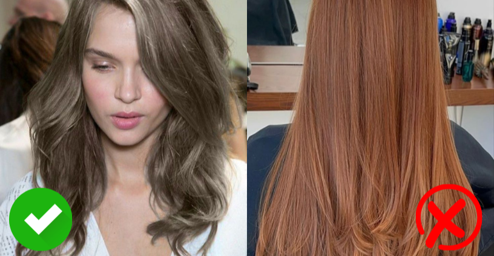
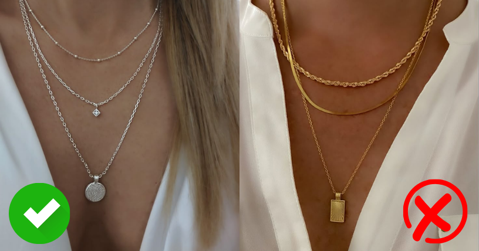

Características generales de la estación Verano
- Subtono de piel frío: tonos rosados, azulados o neutros fríos. La piel puede ser clara o media, con una apariencia porcelana, marfil o ligeramente sonrosada.
- Cabello claro a castaño medio: generalmente con reflejos ceniza, sin pigmentos cálidos o dorados.
- Ojos suaves: azul grisáceo, verde apagado, avellana fría o marrón claro. No hay mucha saturación, y el contorno suele ser difuso.
- Contraste bajo o medio: los colores entre piel, ojos y cabello tienden a fusionarse suavemente, sin cortes drásticos.



Tipos de Verano
Dentro de esta estación, existen subcategorías que ayudan a afinar aún más la elección de colores.
1- Verano claro:
- Colores y rasgos muy suaves.
- Piel y cabello claros con ojos delicados.
- Paleta clara, fría y poco saturada.
2- Verano suave:
- Todo en la apariencia es tenue.
- Mucha armonía entre piel, ojos y cabello.
- Los colores muy contrastantes o brillantes no funcionan bien.
3- Verano frío:
- Subtono frío bien definido.
- Puede tolerar un poco más de contraste que otros Veranos.
- Se favorece con tonos rosados, azulados y plateados.
Paleta de colores ideal para Verano
La paleta de Verano es fría, suave y apagada, como una brisa tranquila o un día nublado.
Los colores deben acompañar esa sutileza sin sobrecargar el rostro. Ejemplos ideales:

Conviene evitar los tonos cálidos (como el naranja o el dorado), los colores muy intensos y los
tonos oscuros saturados (como el negro puro o el rojo tomate), que tienden a endurecer los rasgos.
Maquillaje para Verano
- Base: tonos neutros fríos o rosados claros, dependiendo del tipo de piel.
- Rubor: rosa frío, malva suave, rosa viejo.
- Sombras: gris topo, azul pastel, malva, lavanda, ciruela suave.
- Labiales: rosa empolvado, malva, cereza clara, vino suave.

Evitar los tonos terracota, durazno o coral, que tienen una base cálida y contrastan demasiado con la piel.
Coloración de cabello para Verano
- Rubios ceniza o perlados
- Castaños fríos, medios o claros
- Mechas en tonos beige frío o platino suave

Evitar reflejos dorados, cobrizos o muy oscuros que puedan romper el equilibrio natural.
Accesorios para Verano
- Piedras como amatista, perla gris, cuarzo rosado
- En tonos plateados

El oro amarillo y los tonos cobrizos pueden generar un contraste innecesario y hacer que la piel luzca más apagada.